Wortmarke
Besteht nur aus Schrift, meist dem Namen. Die Wirkung entsteht durch Schriftwahl, Laufweite und Details.
Bekannte Beispiele: Google, Coca-Cola, Canon
Vom Zeichen zur Marke: Grundlagen der Semiotik, Piktogramm-Systeme, Logoarten, Gestaltungsprinzipien, Animation und KI im Gestaltungsprozess. Mit sechs interaktiven Übungen, in denen Sie selbst reduzieren, konstruieren und bewerten.
Ein Logo ist oft das kleinste und zugleich am häufigsten gesehene Element einer Marke. Ein Piktogramm muss in Sekunden verstanden werden, ganz ohne Sprache. Beide verlangen dieselbe Disziplin: so viel wie nötig zeigen, so wenig wie möglich zeichnen.
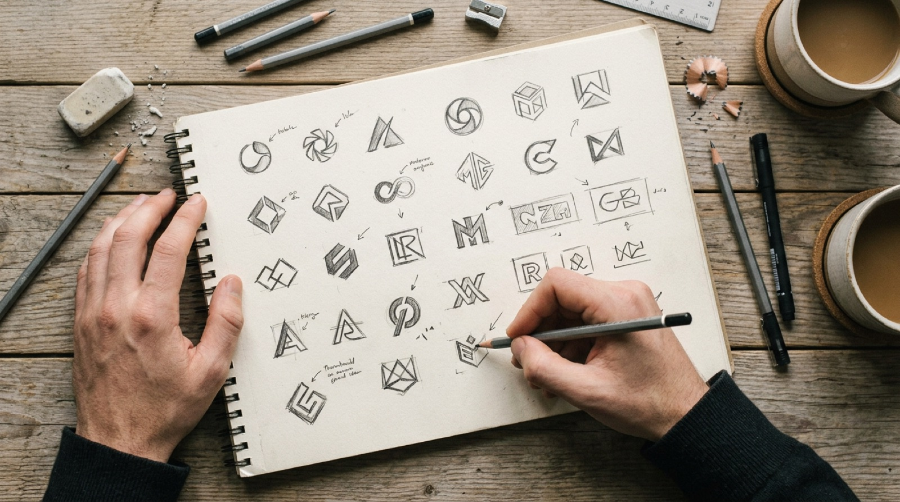
Information ohne Worte
Piktogramme vermitteln eine Bedeutung über ein vereinfachtes Bild. Sie leiten durch Flughäfen, warnen vor Gefahren und erklären Funktionen in Interfaces. Ihr Maßstab ist die Verständlichkeit.
Leitfrage: „Versteht man es sofort, überall?“
Identität in einem Zeichen
Ein Logo kennzeichnet einen Absender: ein Unternehmen, eine Institution, ein Produkt. Es soll wiedererkannt werden, sich unterscheiden und Werte transportieren. Sein Maßstab ist die Unverwechselbarkeit.
Leitfrage: „Erkennt man es wieder, und nur dieses?“
Danach geht es um den Designprozess, den Einsatz in Anwendung und Bewegung sowie um die Frage, wie KI-Werkzeuge den Prozess verändern.
Nach Bearbeitung des Moduls können Sie …
Die Kapitel 01–10 bauen aufeinander auf. Fachbegriffe sind im Stichwortverzeichnis erklärt.
Sechs Übungen, drei zum Piktogramm, drei zum Logo. Jede endet mit „Als erledigt markieren“.
Der Wissenstest mit 14 Fragen fasst das Modul zusammen. Ihr Fortschritt bleibt in diesem Browser gespeichert.
Zeitbedarf: etwa 3–4 Stunden für Kapitel und Übungen. Die Übungen funktionieren auch einzeln, etwa als Einstieg in eine Seminarsitzung.
Bevor wir gestalten, klären wir die Begriffe. Im Alltag werden Logo, Signet und Marke oft gleichgesetzt. Für die Gestaltung lohnt sich die genaue Unterscheidung.
| Begriff | Bedeutung | Herkunft |
|---|---|---|
| Logo | Umgangssprachlich jedes grafische Kennzeichen eines Absenders. Kurzform von Logotype, ursprünglich ein Schriftzug. | griech. lógos, Wort |
| Signet | Grafisches Zeichen, vor allem das Bildzeichen eines Absenders. Historisch das Druckerzeichen. | lat. signum, Zeichen |
| Marke | Rechtlich geschütztes Kennzeichen, das Waren oder Dienstleistungen eines Unternehmens unterscheidet (MarkenG § 3). | Rechtsbegriff |
| Piktogramm | Vereinfachte bildliche Darstellung, die eine Information sprachunabhängig vermittelt. | lat. pictus, gemalt + griech. gráphein, schreiben |
| Icon | Piktogramm in digitalen Oberflächen, steht für eine Funktion oder einen Inhalt (z. B. Suchen, Speichern). | griech. eikṓn, Abbild |
| Corporate Design | Das visuelle Erscheinungsbild einer Organisation: Logo, Farben, Schriften, Bildsprache, Raster. Teil der Corporate Identity. | engl. |
Der Philosoph Charles S. Peirce unterschied drei Arten, wie ein Zeichen auf seine Bedeutung verweist. Piktogramme arbeiten meist ikonisch, Logos oft symbolisch: Ihre Bedeutung wird erst durch Wiederholung gelernt.
Das Zeichen sieht aus wie das Gemeinte. Ein Haus-Umriss steht für ein Haus.
Das Zeichen ist eine Spur oder Wirkung. Fußspuren zeigen, dass hier jemand ging.
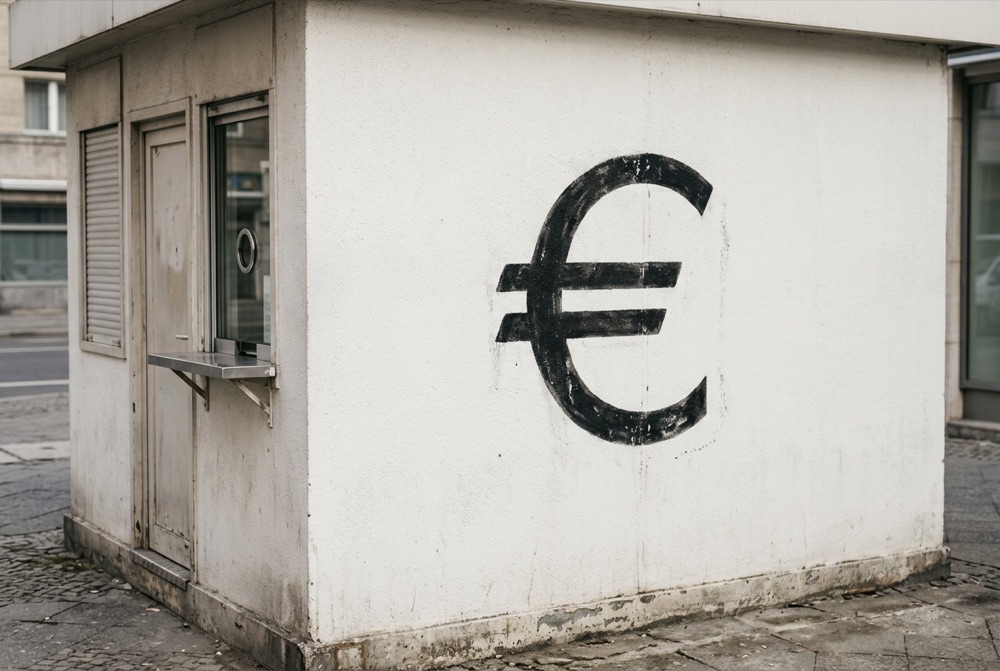
Die Bedeutung ist vereinbart und muss gelernt werden. Das €-Zeichen ähnelt keiner Münze.
Es benennt den Absender und schafft eine eindeutige Zuordnung.
Es grenzt sich von Wettbewerbern ab. Austauschbare Zeichen verlieren diese Funktion.
Durch konsequente Wiederholung wird es zum gelernten Symbol.
Es steht für ein Qualitätsversprechen, ähnlich einer Unterschrift.
Form, Farbe und Schrift transportieren Werte: traditionell, technisch, verspielt.
Es stiftet Zugehörigkeit, nach innen für Mitarbeitende, nach außen für Kundschaft.
„A logo does not sell, it identifies.“Paul Rand, Grafikdesigner (1914–1996)
| Piktogramm | Logo | |
|---|---|---|
| Ziel | Verstehen | Wiedererkennen |
| Zeichentyp | meist Ikon | meist Symbol |
| Eigenständigkeit | erwünscht ist Konvention | erwünscht ist Unverwechselbarkeit |
| Auftreten | im System, als Familie | als Einzelzeichen mit Varianten |
| Erfolgskriterium | Fehlerfreie Deutung ohne Sprache | Eindeutige Zuordnung zum Absender |
Menschen markieren Besitz und Herkunft seit Jahrtausenden. Das moderne Logo entsteht mit Industrialisierung, Massenproduktion und Markenrecht. Das Piktogramm wird im 20. Jahrhundert zur Weltsprache.
Handwerker kennzeichnen ihre Arbeit mit einfachen Linienzeichen. Hausmarken zeigen Besitz an Vieh, Werkzeug und Gebäuden.
Fust und Schöffer drucken ihr Signet aus zwei Wappenschilden in die Mainzer Bibel, eines der frühesten Druckerzeichen. Signets werden Qualitätsnachweis und Werbung zugleich.
Das rote Dreieck der Brauerei Bass wird unter dem britischen Trade Marks Registration Act als erste Marke eingetragen.
Behrens gestaltet für die AEG Produkte, Architektur und Drucksachen aus einem Guss. Das gilt als Beginn des Corporate Designs.
Otto Neurath entwickelt mit Marie Reidemeister am Wiener Gesellschafts- und Wirtschaftsmuseum die „Wiener Methode der Bildstatistik“. Ab 1928 prägt Gerd Arntz die Zeichen. Später heißt die Methode Isotype: Mengen werden durch wiederholte Piktogramme gezeigt.
Rand prägt das moderne, reduzierte Firmenzeichen. Seine Gestaltung für IBM, Westinghouse oder UPS zeigt den Einfluss der Moderne.
Masaru Katsumi und Yoshiro Yamashita entwickeln die ersten systematischen Sport-Piktogramme für Olympische Spiele.
Aichers Piktogramme auf einem Raster aus Orthogonalen und Diagonalen werden zum Vorbild für Leitsysteme weltweit.
Cook und Shanosky gestalten im Auftrag des US-Verkehrsministeriums 34 frei nutzbare Symbole für Verkehrsknotenpunkte.
Logos verlieren Verläufe und Schatten, werden für App-Icons und Favicons optimiert und als flexible Systeme mit Varianten gedacht.
Logos lassen sich nach ihrem Aufbau aus Schrift und Bild einteilen. Die Grenzen sind fließend, die Einteilung hilft aber bei Analyse und Entwurf. Alle Beispiele sind fiktive Marken.
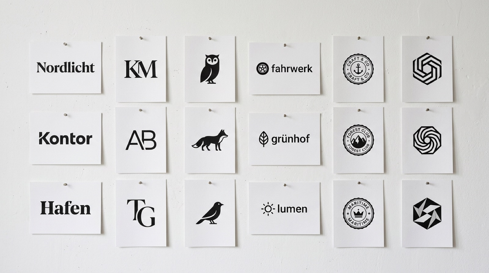
Besteht nur aus Schrift, meist dem Namen. Die Wirkung entsteht durch Schriftwahl, Laufweite und Details.
Bekannte Beispiele: Google, Coca-Cola, Canon
Initialen oder ein einzelner Buchstabe, oft als Monogramm verbunden. Gut für lange Namen.
Bekannte Beispiele: IBM, VW, McDonald’s „M“
Ein gegenständliches Bildzeichen ohne Schrift. Setzt voraus, dass die Marke bereits bekannt ist.
Bekannte Beispiele: Apple, Shell, Lacoste
Kombination aus Bildzeichen und Schriftzug. Die häufigste Form, weil beide Teile auch einzeln nutzbar sind.
Bekannte Beispiele: Adidas, Lufthansa, Puma
Schrift und Bild sind fest in einer umschließenden Form verbunden, etwa einem Siegel oder Wappen.
Bekannte Beispiele: Harley-Davidson, Burger King, viele Vereinswappen
Eine geometrische oder freie Form ohne gegenständliches Vorbild. Die Bedeutung wird vollständig zugeschrieben.
Bekannte Beispiele: Deutsche Bank, Nike, Pepsi
Zur Wort-Bild-Marke zählt auch die Kombination mit Claim, einem kurzen Slogan unter dem Logo. Der Claim ist austauschbar, das Logo bleibt.
Ein Piktogramm übersetzt eine Information in ein Bild, das ohne Worte funktioniert. Gute Piktogramme stehen nie allein: Sie folgen einem System aus Raster, Strichstärke und Formsprache.
Nur die Merkmale, die zum Erkennen nötig sind. Details, Perspektive und Schatten entfallen.
Eine Bedeutung pro Zeichen. Mehrdeutige Motive werden durch Kontext oder Konvention geklärt.
Funktioniert über Kulturen hinweg. Gesten, Farben und Symbole müssen daraufhin geprüft werden.
Gleiche Strichstärke, gleiche Ecken, gleiches Raster. Erst die Familie macht ein Leitsystem lesbar.
Otto Neuraths Regel: Eine größere Menge wird durch mehr Zeichen gezeigt, nicht durch ein größeres Zeichen. So bleibt der Vergleich ehrlich lesbar.
Beispiel: Wege zur Hochschule, ein Zeichen entspricht 10 Studierenden (fiktive Werte).
Piktogramme entstehen auf einem Raster, häufig 24 × 24 oder 48 × 48 Einheiten. Ein Rand bleibt frei (Schutzraum). Hilfsformen, sogenannte Keylines, geben Kreis, Quadrat, Hoch- und Querformat vor. Sie sind so bemessen, dass die Grundformen optisch gleich groß wirken.
Für Sicherheitskennzeichnung legt DIN EN ISO 7010 Form und Farbe verbindlich fest. Die Kombination aus Grundform und Farbe ist selbst schon ein Zeichen, noch bevor man das Motiv liest. Öffentliche Informationszeichen regelt ISO 7001.
Gute Zeichen wirken mühelos. Dahinter stehen Entscheidungen über Form, Proportion, Farbe und Schrift, die auf Gesetzmäßigkeiten unserer Wahrnehmung aufbauen.
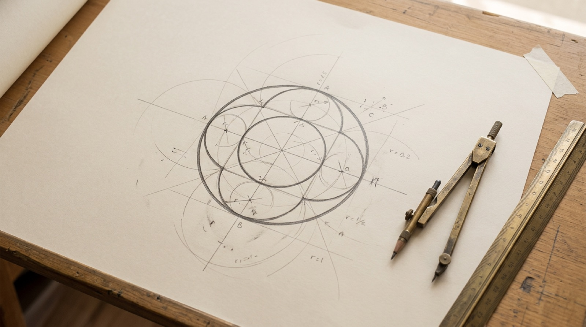
Reduktion heißt nicht „wenig“, sondern „nichts Überflüssiges“. Ein reduziertes Zeichen bleibt in kleinen Größen, auf schlechtem Papier und im Augenwinkel lesbar. Prüffrage: Was passiert, wenn ich dieses Element weglasse? Wenn das Zeichen gleich gut funktioniert, war das Element überflüssig.
Einfache, geschlossene Formen werden bevorzugt wahrgenommen und schneller gemerkt.
Lücken werden im Kopf ergänzt. Unterbrochene Konturen wirken leichter und dennoch vollständig.
Der Negativraum wird zur zweiten Form. Bekanntes Beispiel: der Pfeil zwischen „E“ und „x“ bei FedEx.
Was nah beieinander liegt, gehört zusammen. Abstände bestimmen, ob Bild und Schrift eine Einheit bilden.
Gleiche Formen, Farben oder Strichstärken werden als Gruppe gelesen. Grundlage jeder Piktogrammfamilie.
Linien werden in ihrer Richtung weitergelesen. Ein Schwung verbindet Elemente und erzeugt Bewegung.
Geometrisch gleich ist nicht optisch gleich. Ein Kreis mit derselben Höhe wie ein Quadrat wirkt kleiner, weil er weniger Fläche hat. Runde und spitze Formen ragen deshalb leicht über die Grundlinie hinaus (engl. overshoot). Schalten Sie zwischen beiden Varianten um. Der Ausgleich ist zur Verdeutlichung etwas verstärkt; in der Praxis sind es wenige Prozent.
Alle drei Formen sind exakt 80 Einheiten hoch. Kreis und Dreieck wirken trotzdem kleiner als das Quadrat.
Viele Bildmarken werden aus Kreisen und Rastern konstruiert. Das sorgt für harmonische Kurven und macht das Zeichen exakt reproduzierbar. Der Goldene Schnitt (≈ 1 : 1,618) ist ein mögliches Proportionssystem, aber kein Qualitätsbeweis. Entscheidend ist, wie das Zeichen wirkt.
Farbe wirkt schneller als Form und ist stark kulturell geprägt. Ein Logo sollte daher zuerst einfarbig funktionieren; Farbe kommt als zweite Ebene hinzu.
| Farbe | Häufige Assoziation (westlich) | Typische Branchen |
|---|---|---|
| Rot | Energie, Leidenschaft, Signal | Lebensmittel, Medien, Sport |
| Blau | Vertrauen, Ruhe, Kompetenz | Banken, Versicherungen, Tech |
| Grün | Natur, Gesundheit, Nachhaltigkeit | Bio, Energie, Pharmazie |
| Gelb | Optimismus, Aufmerksamkeit | Logistik, Handel, Gastronomie |
| Schwarz | Eleganz, Präzision, Luxus | Mode, Design, Premium |
In Wortmarken ist die Schrift das Zeichen. Serifenschriften wirken eher traditionell, Groteskschriften sachlich, Schreibschriften persönlich. Selten wird eine Schrift unverändert übernommen: Laufweite, Kerning und einzelne Buchstaben werden angepasst, damit der Schriftzug eigenständig und schutzfähig wird.
Ein Logo entsteht selten durch einen Geistesblitz. Es ist das Ergebnis eines Prozesses, der vom Verstehen über viele Skizzen zur präzisen Reinzeichnung führt.
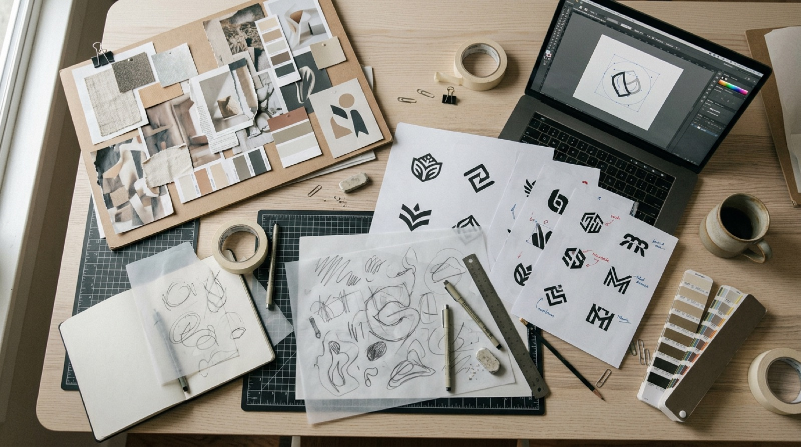
Wer ist der Absender, wer die Zielgruppe? Welche Werte, welcher Wettbewerb, welche Anwendungen? Ein Re-Briefing hält das gemeinsame Verständnis schriftlich fest.
Ergebnis: Briefing-Dokument, Anforderungsliste
Wettbewerbsanalyse, Geschichte des Unternehmens, Bildwelten der Branche. Ziel ist, Klischees zu erkennen, um sie bewusst zu nutzen oder zu vermeiden.
Ergebnis: Wettbewerbsübersicht, Moodboard, Begriffssammlung
Mindmaps und Wortfelder, dann schnelle Scribbles mit Stift auf Papier: viele Ideen in kurzer Zeit, bewertet wird erst danach.
Ergebnis: 50–100 Scribbles, Auswahl von 3–5 Richtungen
Die besten Ideen werden digital als Vektor umgesetzt, variiert und in Schwarz-Weiß geprüft. Erst danach kommen Farbe und Schrift hinzu.
Ergebnis: Entwurfsvarianten mit Konstruktion
Entwürfe werden im Kontext gezeigt (Visitenkarte, Website, Schild) und mit dem Briefing begründet, nicht mit Geschmack.
Ergebnis: Entscheidung, Änderungswünsche
Präzise Ausarbeitung: Kurven optimieren, optische Korrekturen, Kerning, Varianten für klein und groß, positiv und negativ.
Ergebnis: finale Vektordateien
Regeln für Schutzzone, Mindestgröße, Farben und Anwendung, dazu ein Paket mit allen Dateiformaten.
Ergebnis: Logo-Manual, Dateipaket (SVG, PDF, PNG)
Tipp: Der Schwarz-Weiß-Test in Schritt 04 spart später viel Arbeit. Ein Zeichen, das nur durch Farbe oder Verlauf funktioniert, scheitert bei Stempel, Gravur oder Fax.
Ein Logo lebt in hunderten Kontexten: vom 16-Pixel-Favicon bis zur Fassade. Regeln im Styleguide sichern, dass es überall gleich gut funktioniert.
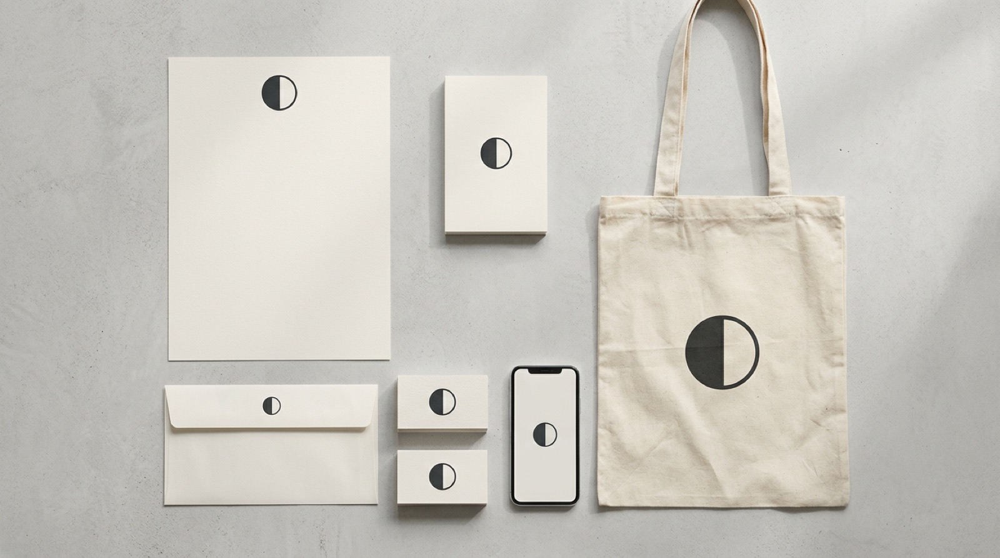
Statt ein Logo einfach zu verkleinern, werden Varianten mit abnehmender Komplexität definiert. Klicken Sie sich durch die vier Stufen:
Ein Freiraum rund um das Logo, in den keine anderen Elemente ragen dürfen. Er wird relativ zum Logo definiert, etwa als Höhe des Bildzeichens oder eines Buchstabens („x“).
Die kleinste zulässige Darstellung, z. B. 20 mm Breite im Druck oder 24 px Höhe am Bildschirm. Darunter wird eine vereinfachte Variante eingesetzt.
| Format / System | Einsatz | Art |
|---|---|---|
| SVG | Web, Apps, Präsentationen. Beliebig skalierbar, klein, per CSS einfärbbar. | Vektor |
| PDF / EPS | Druckvorstufe, Weitergabe an Agenturen und Druckereien. | Vektor |
| PNG | Office, soziale Medien, wenn kein SVG möglich ist. Transparenz möglich. | Pixel |
| CMYK | Vierfarbdruck (Offset, Digitaldruck) | Druckfarben |
| Pantone / HKS | Sonderfarbe für exakte Farbwiedergabe im Druck | Volltonfarbe |
| RGB / HEX | Bildschirm, Web, Apps | Lichtfarben |
Auf Bildschirmen stehen Logos und Icons selten still. Bewegung kann eine Markenidee erzählen, Zustände erklären und Rückmeldung geben. Sie muss aber genauso diszipliniert gestaltet werden wie die Form selbst.
Logo am Anfang oder Ende von Videos, Präsentationen und Spots. Dauer meist 1–3 Sekunden, oft mit Sound (Audio-Logo).
Der Splash-Screen überbrückt Ladezeit. Die Animation sollte kürzer sein als die Wartezeit und nie zusätzlich bremsen.
Ein Teil des Logos wird zum Loader, z. B. ein rotierendes Rad. Läuft als Schleife, bis der Inhalt bereit ist.
Icons reagieren auf Klick oder Tippen: Herz füllt sich, Menü wird zum Schließen-Kreuz. Bestätigt eine Aktion.
Hover-Effekte im Header, animierte Profilbilder und Sticker. Kurz, wiederholbar, ohne Ton.
Das Logo verändert sich je nach Inhalt oder Daten. Bekannt sind das wandelbare MTV-Logo oder die Google-Punkte, die sich zum „G“ formen.
| Prinzip | Bedeutung | Richtwert |
|---|---|---|
| Timing | Die Dauer bestimmt die Wirkung: kurz wirkt präzise, lang wirkt feierlich. | Icons 100–300 ms, Übergänge 200–500 ms, Logo-Intro 1–3 s |
| Easing | Beschleunigung und Abbremsen. Lineare Bewegung wirkt mechanisch, natürliche Bewegung bremst am Ende ab. | Ease-out für Erscheinen, ease-in für Verschwinden |
| Aufbau | Die Reihenfolge, in der Teile erscheinen, erzählt die Logik des Zeichens: erst Kontur, dann Fläche, dann Schrift. | Versatz (Stagger) 50–150 ms zwischen Elementen |
| Morphing | Eine Form verwandelt sich in eine andere, z. B. Menü in Kreuz. Verbindet zwei Zustände sichtbar. | Gleiche Anzahl Punkte in beiden Formen |
| Ruhezustand | Jede Animation endet im statischen Logo. Das Endbild muss allein funktionieren. | Letztes Bild = Reinzeichnung |
| Markenbezug | Die Bewegung leitet sich aus der Idee ab: ein Rad rollt, Licht geht an, Wellen fließen. | Eine Bewegungsidee pro Marke |
Wählen Sie ein Logo, eine Beschleunigungskurve und eine Dauer. Achten Sie darauf, wie sich die Wirkung ändert, obwohl die Bewegung gleich bleibt.
Klicken Sie auf die Icons. Jedes zeigt eine typische Mikrointeraktion mit ihrer Dauer. Gute Icon-Animationen sind so kurz, dass sie nicht warten lassen, und so deutlich, dass die Zustandsänderung klar wird.
| Format | Einsatz | Eigenschaften |
|---|---|---|
| CSS / SVG | Icons und Logos im Web, Hover- und Klick-Effekte | Leicht, scharf, per Code steuerbar |
| Lottie | Komplexere Animationen aus After Effects (Export mit Bodymovin) für Web und Apps | Vektorbasiert, JSON-Datei, klein |
| Rive | Interaktive Animationen mit Zuständen (State Machines), z. B. Icons, die auf Eingaben reagieren | Vektorbasiert, interaktiv, eigene Laufzeit |
| MP4 / WebM | Intros, Social Media, Präsentationen | Pixelbasiert, gut für Effekte, nicht skalierbar |
| GIF | E-Mail-Signaturen, ältere Plattformen | 256 Farben, große Dateien, nur noch Notlösung |
Faustregel: Erst das statische Logo fertig gestalten, dann die Bewegung. Eine Animation rettet kein schwaches Zeichen.
Bildgeneratoren liefern in Sekunden dutzende Logo-Entwürfe. Das verändert den Prozess, ersetzt aber nicht die gestalterische Arbeit. Dieses Kapitel zeigt, wo KI hilft, wo sie scheitert und wie Sie sie verantwortungsvoll einsetzen.
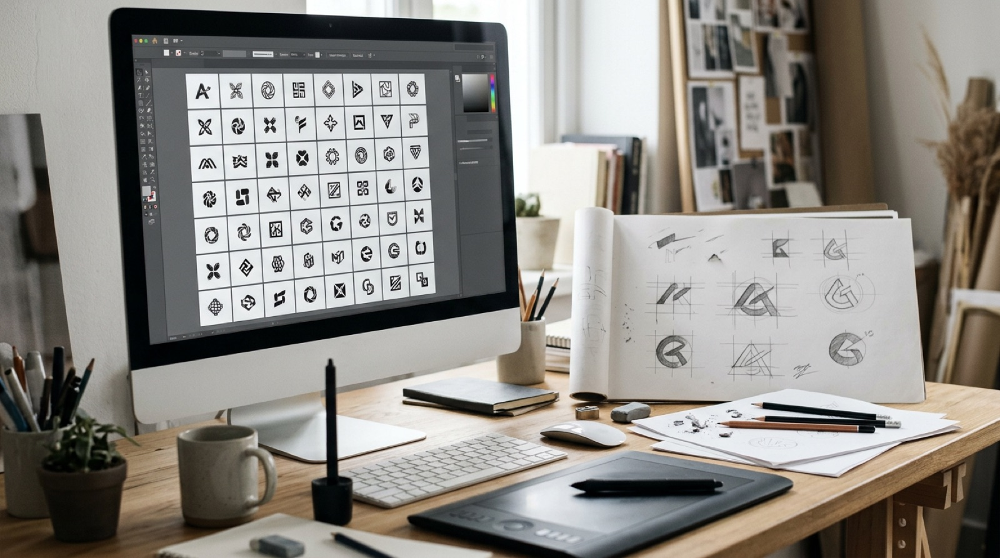
| Prozessschritt | Möglicher KI-Einsatz | Wer entscheidet |
|---|---|---|
| Briefing | Fragen sammeln, Begriffe und Werte strukturieren | Mensch |
| Recherche | Moodboards, Bildwelten, Wettbewerbsübersicht zusammenfassen | Mensch prüft Quellen |
| Ideenfindung | Viele Bildideen und Stilrichtungen als Anregung | Mensch wählt aus |
| Entwurf | Varianten von Farbe und Form, schnelle Skizzen | Mensch zeichnet neu |
| Präsentation | Mockups und Anwendungsbilder (wie die Fotos in diesem Modul) | Mensch |
| Reinzeichnung | Kaum: Vektorisieren hilft, ersetzt aber keine Konstruktion | Mensch |
In Deutschland schützt das Urheberrecht nur persönliche geistige Schöpfungen von Menschen. Ein rein KI-generiertes Bild ist in der Regel nicht urheberrechtlich geschützt. Erst die menschliche Überarbeitung kann Schutz begründen.
Ein Logo kann als Marke angemeldet werden, auch mit KI entstanden. Es darf aber nicht mit älteren Marken verwechselbar sein. Eine Recherche in den Registern von DPMA und EUIPO ist Pflicht.
KI kennt weder die Geschichte noch die Werte oder die Zielgruppe eines Unternehmens. Die Begründung, warum ein Zeichen passt, bleibt Aufgabe der Gestaltenden.
Ein Logo ist Teil eines Systems mit Varianten, Schutzzone, Mindestgröße und Farbwerten. Einzelbilder aus einem Generator liefern dieses System nicht.
Transparenz: Kennzeichnen Sie KI-Anteile gegenüber Auftraggebenden und in Prüfungsleistungen. Prüfen Sie außerdem die Nutzungsbedingungen des jeweiligen Tools, etwa zur kommerziellen Nutzung.
Ziele, Zielgruppe und Werte klären Sie selbst. Ohne klares Briefing produziert KI nur Beliebiges.
Generieren Sie Stimmungen, Formideen und Stilrichtungen, nicht das fertige Logo.
Prüfen Sie Varianten mit den Kriterien aus dem Logo-Check: einfach, eigenständig, skalierbar, einfarbig nutzbar.
Übertragen Sie die beste Idee von Hand in einen konstruierten Vektor mit Raster, Kurvenkontrolle und optischen Korrekturen.
Markenrecherche, Bildersuche nach ähnlichen Zeichen, Kontexttests wie im Logo-Labor.
Halten Sie fest, welche Schritte mit KI entstanden sind und welche Entscheidungen Sie getroffen haben.
Gute Prompts beschreiben Inhalt und Einschränkungen, nicht nur einen Stil. Stellen Sie einen Prompt für eine Ideenrunde zusammen und kopieren Sie ihn in ein Bild-Tool Ihrer Wahl.
Tipp: Lassen Sie Schrift bewusst weg. Die Wortmarke gestalten Sie besser selbst mit einer echten Schrift.
Jedes Piktogramm ist das Ergebnis von Abstraktion. Je weiter wir reduzieren, desto universeller, aber auch desto mehr gelernt muss das Zeichen sein.
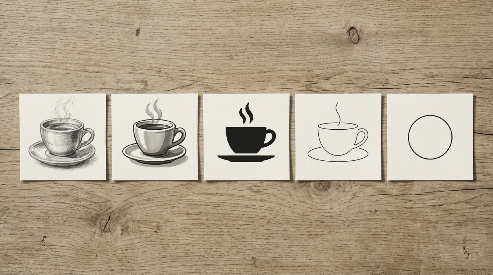
Ziehen Sie den Regler und beobachten Sie, welche Merkmale der Tasse bei jeder Stufe wegfallen und welche bleiben müssen.
Bringen Sie die vier Bäume in die Reihenfolge von konkret nach abstrakt. Klicken Sie sie nacheinander an. Ein zweiter Klick nimmt die Auswahl zurück.
Welche Stufe würden Sie für ein Leitsystem in einem Café wählen, welche für ein Logo? Begründen Sie in zwei Sätzen.
Ein Piktogramm ist nur so gut wie seine Deutung. Testen Sie acht Zeichen: Was bedeuten sie, und warum versteht man sie? Achten Sie auf den Zeichentyp nach Peirce.
Wählen Sie die passende Bedeutung. Nach jeder Antwort erfahren Sie, auf welchem Prinzip das Zeichen beruht. Ab 6 richtigen Antworten gilt die Übung als bestanden.
Konstruieren Sie ein Piktogramm aus geometrischen Grundformen auf einem 48er-Raster. Die Vorschau zeigt sofort, ob es in kleinen Größen und negativ noch funktioniert.
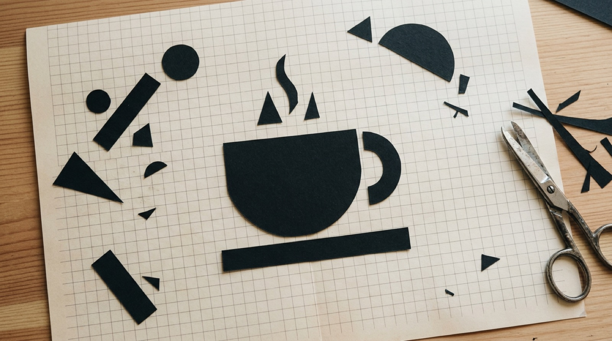
Gestalten Sie ein Piktogramm für Café.
Form anklicken zum Auswählen, ziehen zum Verschieben. Pfeiltasten bewegen um 1 Einheit, mit Umschalt um 4.
Keine Form ausgewählt. Klicken Sie auf eine Form oder fügen Sie oben eine hinzu.
Ein Lösungsvorschlag pro Aufgabe. Ein Klick lädt das Beispiel auf die Zeichenfläche, wo Sie es zerlegen und verändern können. Ihr eigener Entwurf wird dabei ersetzt.
Zeigen Sie Ihr Piktogramm einer anderen Person ohne Erklärung. Hat sie es richtig gedeutet? Welche Form haben Sie nach dem 16-px-Test noch verändert?
Zehn fiktive Marken, sechs Kategorien. Ordnen Sie jedes Logo seiner Logoart zu und prüfen Sie dann Ihr Ergebnis.
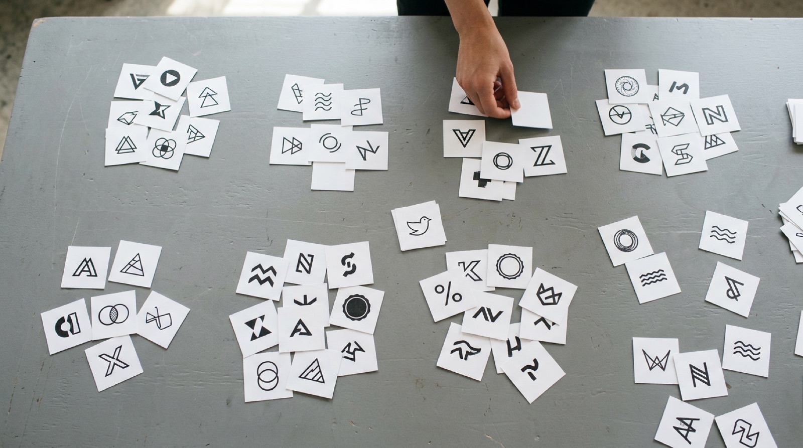
Ziehen Sie ein Logo in die passende Kategorie. Alternativ: Logo antippen, dann Kategorie antippen. Ein Klick auf ein zugeordnetes Logo legt es zurück.
Entwickeln Sie eine einfache Wort-Bild-Marke und testen Sie sie dort, wo Logos wirklich leben: im Browser-Tab, auf der Visitenkarte, als App-Icon und auf dunklem Grund.
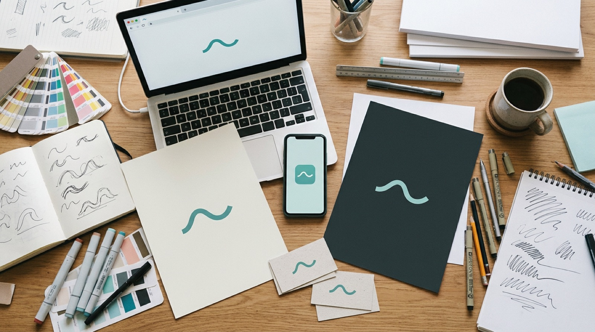
Wählen Sie eine fiktive Marke (oder erfinden Sie eine) und entwerfen Sie zwei deutlich unterschiedliche Varianten. Mit „Variante A“ und „Variante B“ wechseln Sie zwischen beiden; unter dem großen Logo sehen Sie sie direkt nebeneinander. Entscheiden Sie sich anhand der Kontexttests für eine und notieren Sie drei Gründe.
In welchem Kontext hat Ihre Variante am meisten verloren? Was würden Sie für eine kleine Version (Favicon, App-Icon) vereinfachen?
Geschmack ist kein Kriterium. Bewerten Sie Logos anhand von sechs Qualitätskriterien und vergleichen Sie Ihr Urteil mit einer Referenzbewertung.
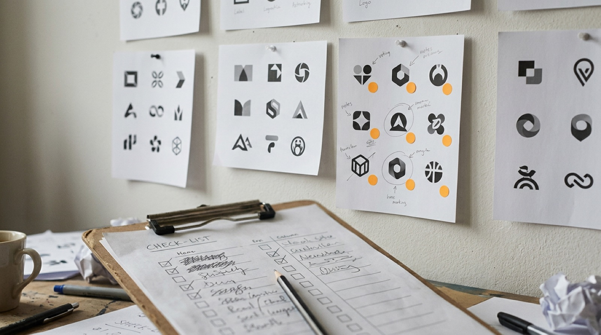
Wählen Sie ein Logo, bewerten Sie es auf einer Skala von 1 bis 5 und decken Sie dann die Referenzbewertung auf. Bewerten Sie mindestens zwei der drei Beispiele. Unter „Mein Logo“ finden Sie die zuletzt bearbeitete Variante aus dem Logo-Labor.
Vierzehn Fragen quer durch das Modul. Sie erhalten nach jeder Frage eine kurze Erklärung.
Grundlagenwerke zu Zeichen, Piktogrammen und Logogestaltung, chronologisch geordnet. Ideal zur Vertiefung und für Hausarbeiten.
Alle Fachbegriffe des Moduls, kurz erklärt und mit Verweis auf das passende Kapitel.
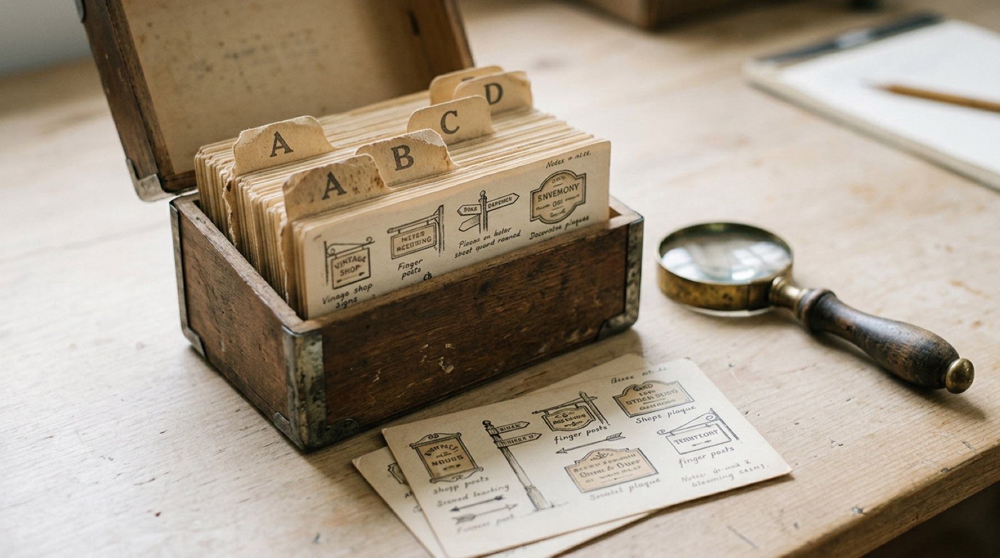